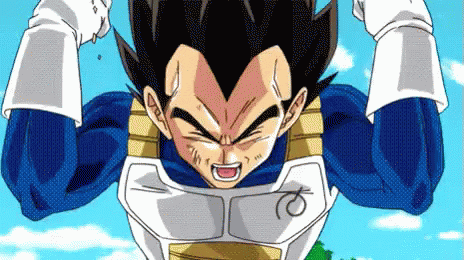
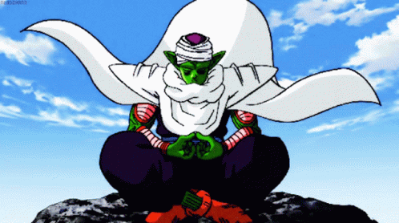
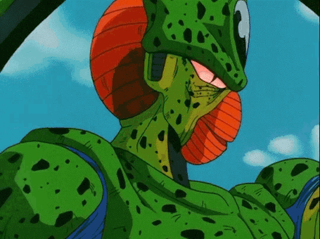
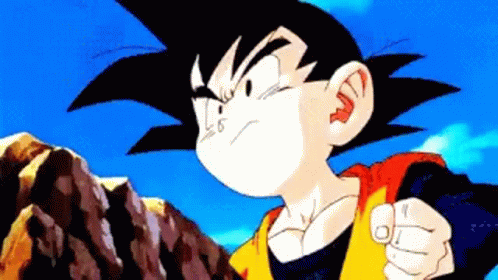
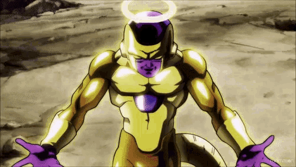
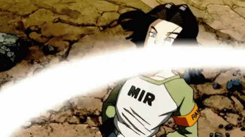

-
Goku #001

- Sayajin
Graças ao seu sangue saiyajin, ele era mais poderoso que a maioria dos inimigos que enfrentava, ficando ainda mais forte à medida que lutava. Mesmo assim, por causa dos seus mestres Son Gohan e Kame, sempre foi gentil com os outros, chegando ao ponto de tentar não matar nenhum inimigo.
-
Vegeta #002
- Sayajin
A personalidade de Vegeta muda de assassino cruel para anti-herói vingativo, obcecado por se tornar mais forte do que Goku. Ele se torna o rival de Goku e escolhe a Terra como um lugar para se estabelecer e viver.
-
Gohan #003

- Sayajin
- Humano
Ingênuo, inteligente e com potencial que nem ele mesmo sabe que possui. Filho de Goku, prefere lutar para defender os outros do que lutar por si mesmo.
-
Piccolo #004
- Namekuseijin
Guerreiro de sangue frio, porém, leal e fiel aos seus companheiros. Começou como vilão e se tornou um segundo pai para Gohan. Debaixo de sua aparência amedrontadora, esconde um coração enorme.
-
Mirai Trunks #005

- Sayajin
- Humano
Vindo de uma dimensão catastrófica, 20 anos à frente, onde Goku morreu de um vírus cardíaco e os Guerreiros Z foram assassinados pelos Androides 17 e 18 construídos pelo Dr. Maki Gero. O guerreiro que perdeu tudo, menos a esperança.
-
Androide 16 #006
- Androide
Foi criado para matar, porém aprendeu a apreciar a vida e ainda incentivou Gohan a derrotar a derrotar seus oponentes.
-
Goten #007
- Humano
- Sayajin
Goten é muito ágil e habilidoso em artes marciais. Ele recebeu treinamento de seu irmão mais velho, Gohan, e participou de várias batalhas perigosas para proteger a Terra.
-
Bardock #008

- Sayajin
Tentou salvar seu planeta a todo custo de sua destruicao eminente, enviou ainda bebe seu filho Goku para a Terra e morreu lutando como um verdadeiro guerreiro e um sorriso no rosto.
-
Frieza #009
- Changelings
Arrogante e presunçoso, Frieza é o antagonista mais poderoso de dragon ball. Alienígena da raça Changelings, é conhecido por sua inteligência estratégica e habilidades de luta excepcionais o que acaba lhe tornando implacável e temido por todo o universo.
-
Androide 17 #010
- Androide
Criado para causar problemas e destruir a Terra e quem tentasse impedir, acabou virando o salvador do Universo 7 no torneio de poder entre todos os outros universos no qual o Universo 7 se sobressaiu e terminou vitorioso. Sua mudança é percebida na sua escolha de restaurar todos os universos que foram destruidos.